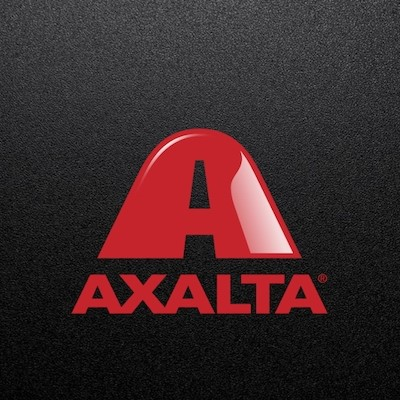
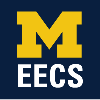
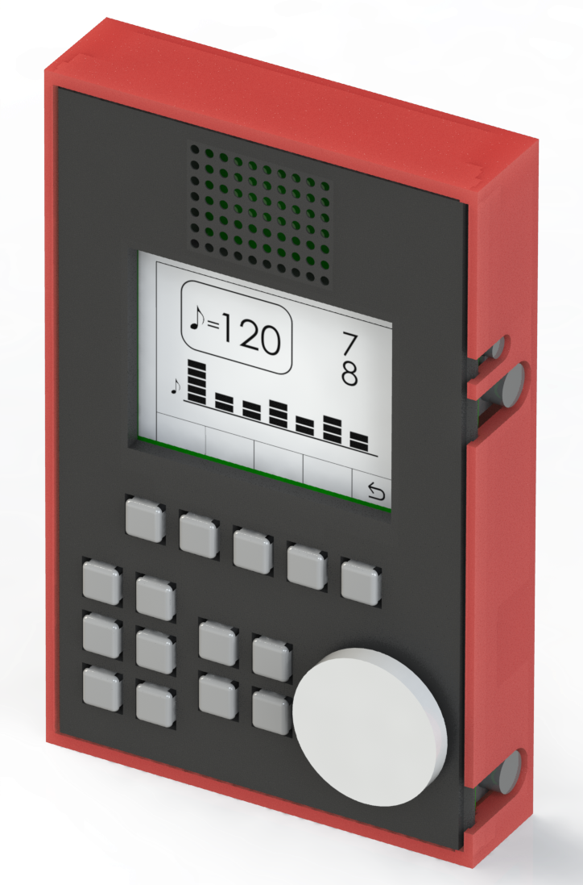

Hi, my name is Esther! This is a little bit about me that you won't find in my resumé, and about the experiences that have shaped me into the person I am today.
I am an engineer. Computer engineering, specifically, at the University of Michigan, where I got my Bachelor's and am now in their Master's program pursuing a degree in Electrical & Comptuer Engineering with a focus on Embedded Systems. I didn't know I wanted to be an engineer for a long time - I was terrible at math and didn't like science until junior year of high school, so it was a surprise to everyone (even me) when I applied into the engineering program at Michigan. But I fell in love with programming in my first semester, and then fell in love with logic - in hardware description languages, in state diagrams, and in programming FPGAs and microprocessors - and I've never really looked back since.
It also helped that I (finally) figured out how calculus worked.
But outside of that, I have always been an avid musician. I started piano lessons when I was 5, picked up violin and flute along the way, and now mostly play guitar and sing. In some ways, it makes sense that I ended up an engineer. Music is what keeps me (mostly) sane through school, it strikes a balance between precision and flexibility, and it exercises the creative side of my brain that, between staring at compile errors for hours on end and trying to understand anything involving statistics, doesn't often get used.
I had the privilege of being a part of 58 Greene A Cappella for four years, including serving as Communications Chair my third year and Director in my fourth. 58 Greene was the defining experience of my time at Michigan - I spent at least 6 hours a week in rehearsals, more time outside of that arranging music, and as director, the rest of my free time (and then some) figuring out how to lead a group. I learned how to take charge and when to step back and allow the dynamics of the group shape the creative process; I learned how to manage people, time, and efforts; and I learned how to work through what seemed like a disaster to put on what people said was the best Greenie concert they've ever been to.
I also learned a lot about music - both how to use my voice and how to take something that exists (like a song) and create something unique out of it. The video above is Senior Song, which is traditionally arranged and sung by seniors at the last concert of the year as a surprise for everyone else. I had the privilege of co-arranging it with our Musical Director; the arrangement is, in a way, a culmination of my time with Greenies.
Systems Engineer Intern
Northrop Grumman Corporation
McLean, VA
June 2018 - August 2018
Supported IRAD team in front-end development for a service platform using Angular, HTML, Bootstrap, etc. with continuous integration
Developed Arduino prototype to demonstrate the capabilities of an efficient data entry solution and suggest potential pitfalls and improvements for the device to the product owner
Followed Agile methodology in planning and development for all technical projects
Assisted in the development and implementation of a system for maintainable and effective internal business practices
Created white paper describing best practices for the system
Worked with technical management and business management to establish baseline requirements for continued business growth and development in the practice areas
Worked with internal SharePoint designers to create a central repository for documents; developed how-to guides for repository usage; communicated changes and updates between site designers and management
Developed and presented winning solution with a team of interns in a national competition to create an internal website connecting interns looking for work with managers
Presented to business management and HR teams
Primarily developed the front-end (HTML, Bootstrap, CSS) and fetched data from SharePoint with JS queries
Created PDF-parsing script in Python to process Contractor Performance Assessment Reporting System documents; used by contracts managers

Global IT Security Intern
Axalta Coating Systems
Glen Mills, PA
May 2017 - August 2017
Restructured Axalta’s Public Key Infrastructure to increase network security
Decommissioned standalone Certification Authority (CA) and migrated certificates to best practices CA
Configured certificate autoenrollment to users and computers to secure company VPN and wireless networks
Developed security protocols for the integration of third-party applications for internal company use
Gathered and provided resources for domain name migration in Axalta’s Forefront Identity Manager (FIM)

Research Assistant
Flynn Research Group
Ann Arbor, MI
October 2015 - April 2017
Collected and manipulated audio data in MATLAB as training data for the IC
Implemented SVM machine learning through MATLAB as part of the testing process
Collected data from iPhone digital to analog converter to measure its signal generating ability as a portable, lower frequency waveform source for IC testing
Developed scripts to interface with various test equipment
Presented data and findings at the Undergraduate Research Opportunities Program Symposium

Metronome
EECS 473: Advanced Embedded Systems
Fall 2017
My senior design project was an embedded systems course. The requirements for the project were fairly open ended - utilize the topics in the course, and create something that has real-world value. My senior design team had five people, and we chose to build a "high-tech" metronome that used FreeRTOS (so it had incredibly good timing accuracy), could visualize up to 21 different subdivisions and set different tones for each subdivision, could overlay two different count patterns (e.g. 5 beats per measure + 8 beats per measure), and had a custom-designed PCB to support buttons, an LCD screen, a speaker, a headphone jack, and a battery.
My main contributions were in developing the firmware and user interface for the display. This involved writing the code that would draw images onto the screen (and double buffering for smooth graphics!) and designing the logic for what would display based on user inputs. We used the STM32F74 microcontroller, which provided some APIs and was useful for the setup and use of the full-color LCD screen that we had chosen.
Our professor, in the comments on our final project, said, "The project was one of the most complex designs ever in the course. The board was complex with a dense processor and you all did everything 'the right way'."
Mobile Robotic Arm
EECS 373: Intro to Embedded Systems
Fall 2016
This was the first "real" embedded systems project that I had ever done. I worked on a team with two others, and looking back, we probably bit off more than we could chew - but we had a lot of fun doing it!
We built a robotic arm + claw that could be raised, lowered, opened, and closed by using a flex sensor attached to a glove. The arm itself was mounted on a mobile base that could be controlled with an XBox controller. Both the glove and the controller had XBee modules that sent signals to the arm. The code was written mainly in Verilog for the Actel SmartFusion microcontroller.